Interior Visualisations · 2026
Adele Residence
Interior visualisations exploring a contemporary residential palette of warm neutrals, natural timber and layered textures.
The ground-floor interiors bring together the ante room, living and dining spaces, and guest bedroom. Warm ivory, soft taupe, natural timber, bronze accents and charcoal details are balanced through restrained material contrasts and layered ambient lighting.
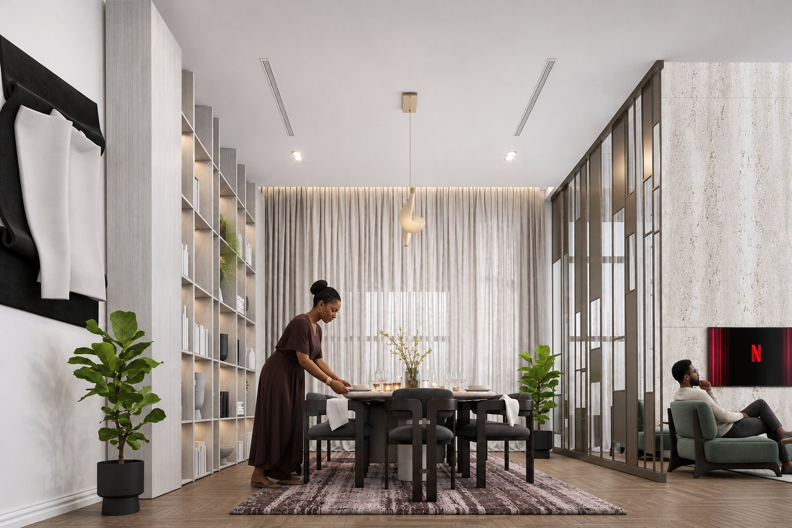
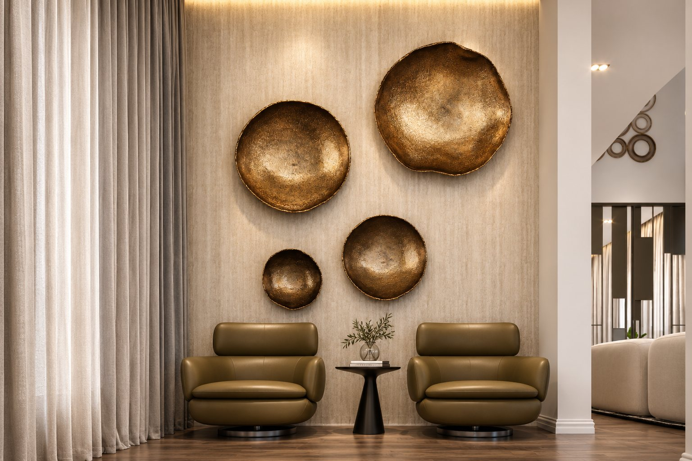
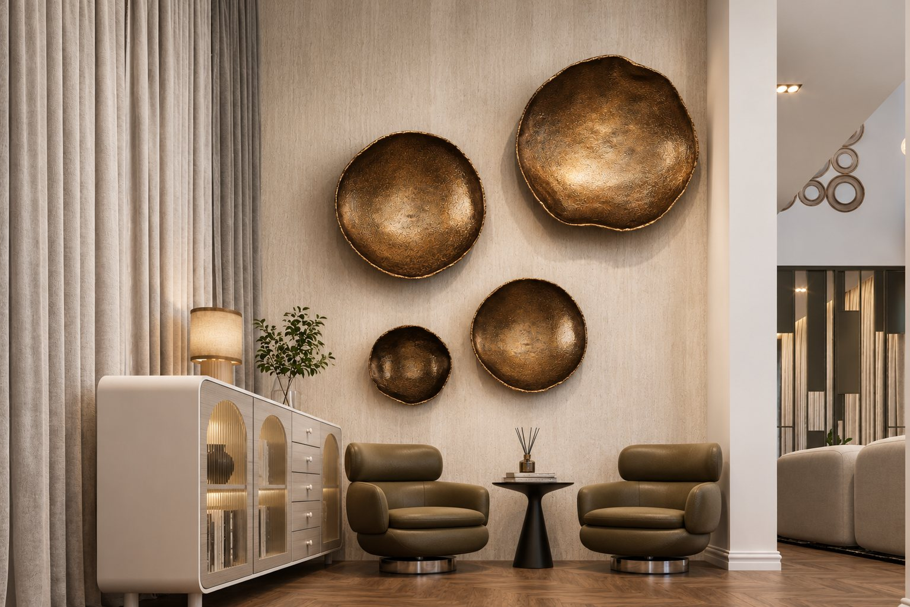
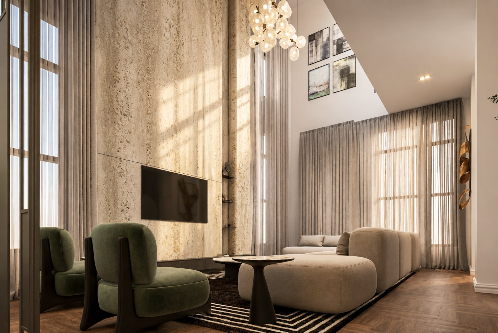
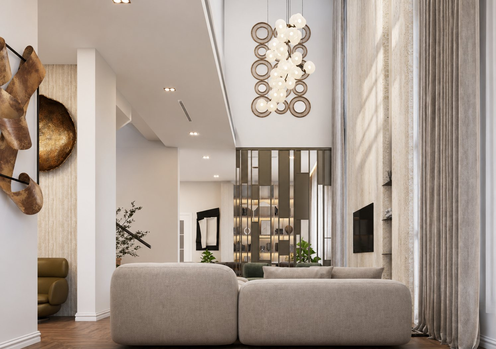
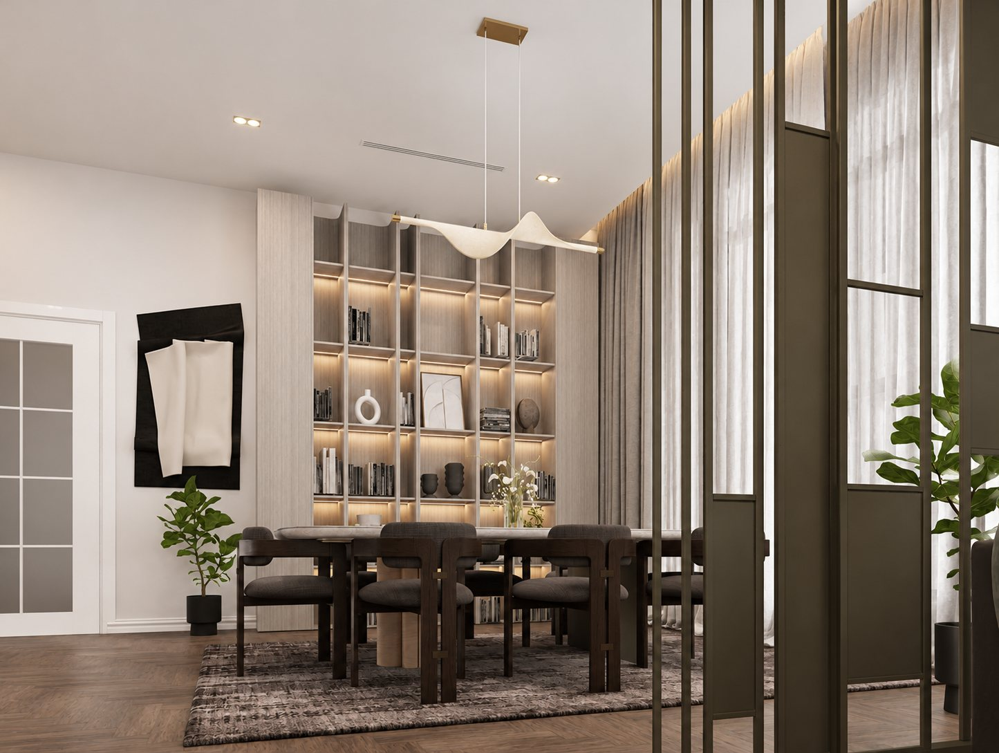
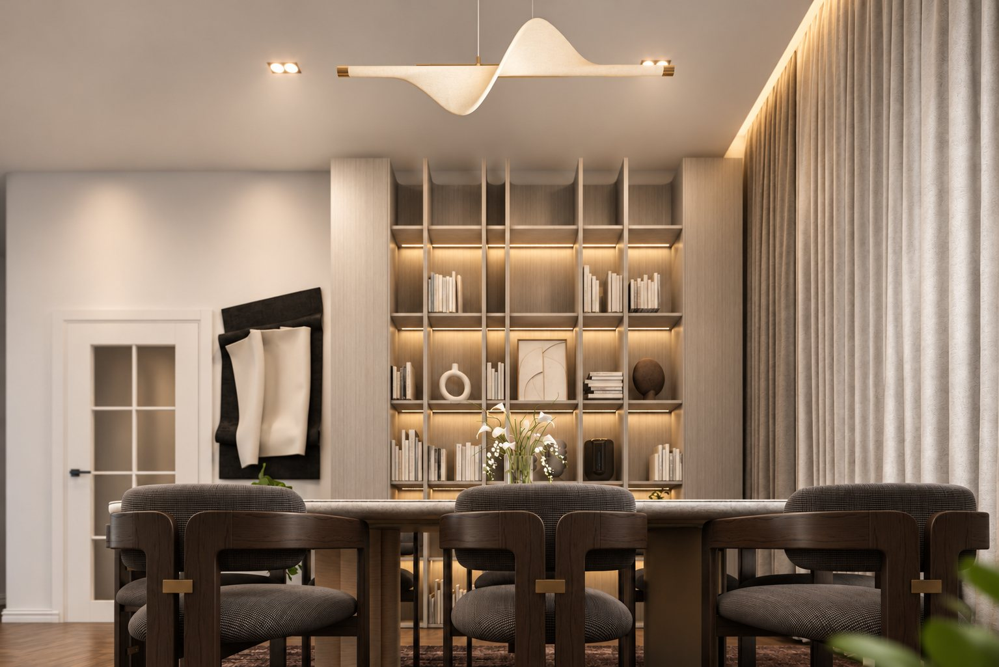
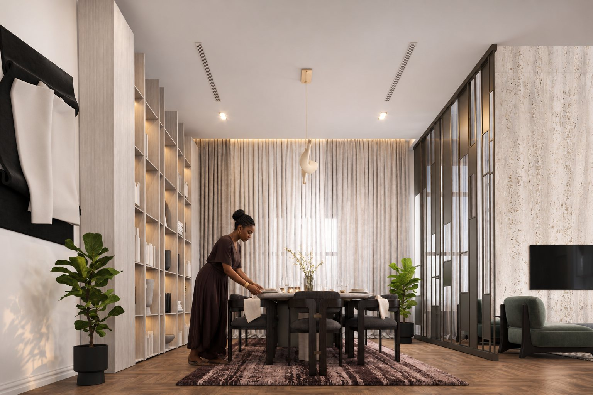
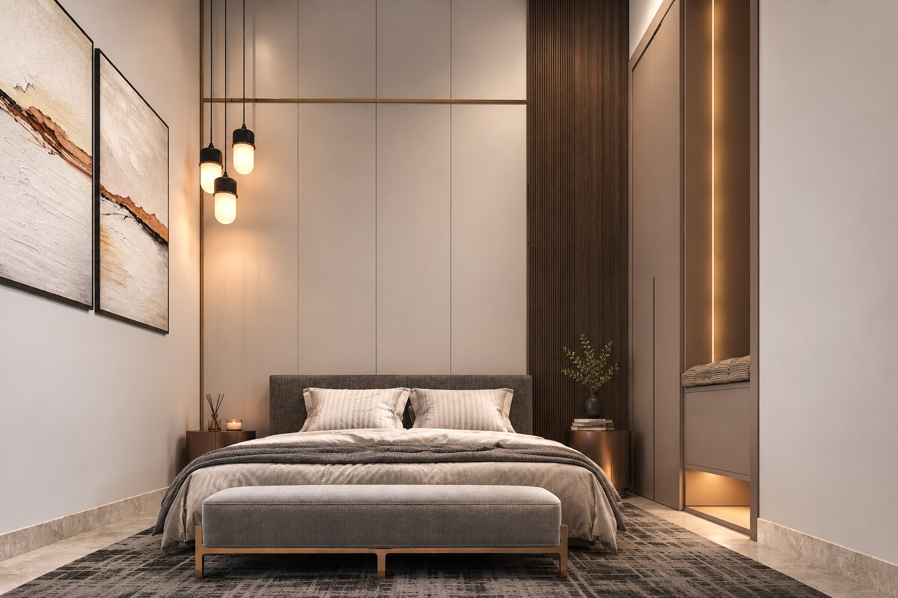
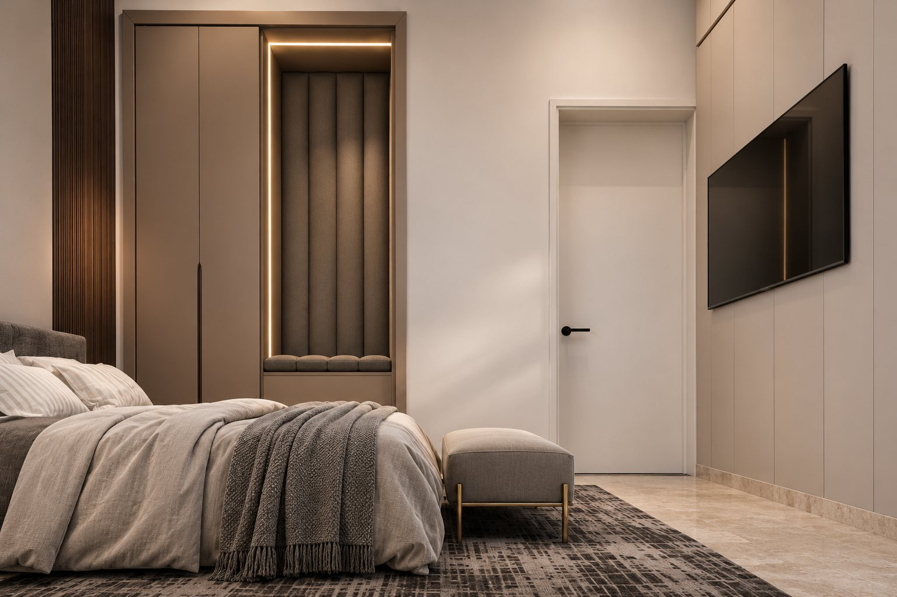
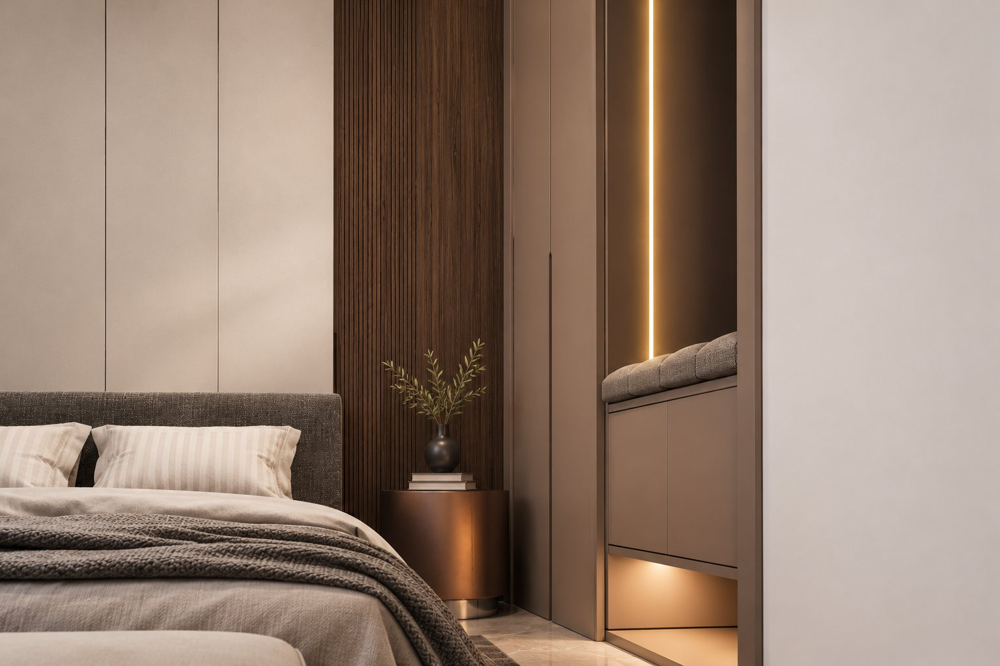